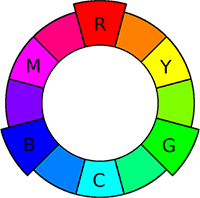
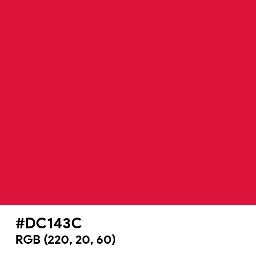
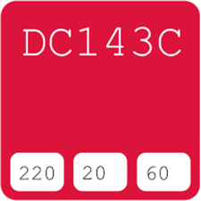
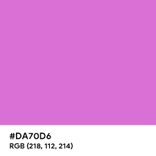
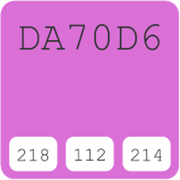
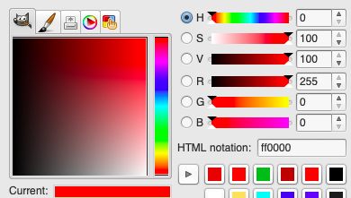

Since the earliest days of web development, there have been ways to specify colors in backgrounds, borders, fonts, and other elements. Some people use supported color keywords, while other people use a more specific color system such as HSL (hue, saturation, lightness). However, today we will be talking about the two most popular color naming conventions, RGB color codes and hexadecimal (hex) color codes.
RGB Color Codes
RGB color codes, sometimes referred to as RGBA color codes when they include an additional value for an alpha channel, are one of the most popular ways to define colors in webpages. They are written in the following way:
color: rgb(0, 0, 0); /* black */
color: rgb(255, 255, 255); /* white */
RGB gets its name from the primary colors; red, green, and blue. In traditional color theory, all other colors can be derived from combinations of these three, and it was thought that these three colors could not be formed by a mix of any other colors.

Hex Color Codes
Hex color codes actually use the same principle as RGB color codes, as they both define colors using the RGB color mode. They are written in a slightly different way:
color: #000000; /* black */
color: #FFFFFF; /* white */
While the choice between which of these color naming conventions to use comes down to a matter of personal preference, there are several advantages to using hex color codes:
- They are more compact, and therefore are better for minimized code. Hex color codes can also become even more compact by using only three digits for some colors, rather than the full six digits.
- They improve the load time of a web page slightly. Computers handle binary digits, and one hexadecimal digit can easily be converted into four binary digits, while decimal digits take longer to convert.
- They are easier to copy over from various programs that contain the color palette to be used, as they are written as one value rather than three separate values, and they are more likely to be used in color schemes being referenced since they have become the standard for use in HTML and CSS code.
While none of these are likely to make a significant impact on the development process, you may find yourself wanting to switch to hex color codes at some point – so, how does one switch from an RGB color code to a hexadecimal color code?
Converting RGB to Hex Color Codes
RGB color code values are based on the number system we are most familiar with, the decimal number system. The decimal number system is a Base-10 system, meaning there are 10 unique characters used to define the numbers. The 10 characters used are the numbers 0 – 9.
Hex color code values, in comparison, are based on the hexadecimal number system. The hexadecimal number system is a Base-16 system, meaning there are 16 unique characters used to define the numbers. The 16 characters used are the numbers 0 – 9, and the letters A – F.
Note: This also explains why the highest value possible in the RGB system is 255. By using a hexadecimal, or 16-bit number system, the maximum number of colors that can be displayed at any one time is 16 x 16, or 256 colors. These 256 colors are represented as the values 0 – 255.
Counting is done the same way in both systems. The first number is 0, and you count all the way up to the last digit. For the decimal number system, this digit is 9. For the hexadecimal number system, this digit is F. Sometimes, a leading 0 is written in front of these values. Once you reach the last digit, you start the count over, this time with your leading digit as the next one in the system (which is 1, for both the decimal and hexadecimal number systems). Below is a chart that helps to show the difference in the two number systems:
| Decimal | 0 | 1 | 2 | 3 | 4 | 5 | 6 | 7 | 8 | 9 | 10 | 11 | 12 | 13 | 14 | 15 |
|---|---|---|---|---|---|---|---|---|---|---|---|---|---|---|---|---|
| Hexadecimal | 0 | 1 | 2 | 3 | 4 | 5 | 6 | 7 | 8 | 9 | A | B | C | D | E | F |
In order to convert an RGB color code to a hex color code, you will need to convert each of the values individually. Let's look at the color crimson as an example. The RGB color code for crimson is rgb(220, 20, 60).

First Value
- Take the first number, 220, and divide by 16. 220 / 16 = 13.75, which means that the first digit of the 6-digit hex color code is 13, or D.
- Take the remainder of the first digit, 0.75, and multiply by 16. 0.75 (16) = 12, which means that the second digit of the 6-digit hex color code is 12, or C.
So far, we have #DC____.
Second Value
- Take the second number, 20, and divide by 16. 20 / 16 = 1.25, which means that the third digit of the 6-digit hex color code is 1.
- Take the remainder of the first digit, 0.25, and multiply by 16. 0.25 (16) = 4, which means that the fourth digit of the 6-digit hex color code is 4.
Adding to what we had already, we now have #DC14__.
Third Value
- Take the third number, 60, and divide by 16. 60 / 16 = 3.75, which means that the fifth digit of the 6-digit hex color code is 3.
- Take the remainder of the first digit, 0.75, and multiply by 16. 0.75 (16) = 12, which means that the sixth digit of the 6-digit hex color code is 12, or C.
Finally, we have our total value of #DC143C.

Converting Hex to RGB Color Codes
Despite the benefits of using hex color codes, there are times you might want to use an RGB color code instead. Some of the reasons you may choose to use an RGB color code, aside from personal preference, are:
- You may need to add an alpha channel to the color itself, rather than using a separate CSS property for opacity.
- You may expect people to print your web page, and printers understand RGB values better than they understand hexadecimal values.
- You may need to manipulate colors with JavaScript, which becomes easier to do if you are using RGB color values.
Converting a hex color code to an RGB color code is actually a little more simple, as there is less math involved. This time, let's look at the color orchid as an example. The hex color code for orchid is #DA70D6.

First Value
- Take the first digit, D, and convert it into decimal. The result is 13.
- Multiply 13 by 16. 13 (16) = 208. This is the partial value.
- Take the second digit, A, and convert it into decimal. The result is 10.
- Add the partial value to the second digit. 208 + 10 = 218.
This means that 218 is the red value.
Second Value
- Take the third digit, 7, and convert it into decimal. The result is 7.
- Multiply 7 by 16. 7 (16) = 112. This is the partial value.
- Take the fourth digit, 0, and convert it into decimal. The result is 0.
- Add the partial value to the second digit. 112 + 0 = 112.
This means that 112 is the green value.
Third Value
- Take the fifth digit, D, and convert it into decimal. The result is 13.
- Multiply 13 by 16. 13 (16) = 208. This is the partial value.
- Take the sixth digit, 6, and convert it into decimal. The result is 6.
- Add the partial value to the second digit. 208 + 6 = 214.
This means that 214 is the blue value, giving us our final result of rgb(218, 112, 214).

The Color Palette and You
No matter which method you prefer, both RGB and hex color codes are based upon the blending and intensity of three colors to create many different colors. However, colors on the web blend together differently than you might expect if you were to mix different color paint together.
Green + Blue = Cyan
Red + Blue = Magenta
Red + Green = Yellow
You might recognize these colors from another way of defining color in design, known as CMYK, which is used for printing. Some people prefer to think of the color palette not as the combination of RGB values to create CMYK values, but the combination of the CMYK values to create RGB values.
Magenta + Yellow = Red
Cyan + Yellow = Green
Cyan + Magenta = Blue
Cyan + Magenta + Yellow = Key (Black)
Knowing this, it becomes easier to understand what the individual RGB values control and how exactly to manipulate them to get the colors you are looking for.
Understanding the Sliding Scale
The sliding scale of color is what most representations of color palettes use in place of a color wheel. It goes through all the colors of the rainbow, starting at red, and continuing on through orange, yellow, green, blue, purple, and pink until it returns to red.

The red RGB value is responsible for warm color tones, such as red, pink, and orange. The higher this value is, the warmer the color will be. Red is the first color encountered on the sliding scale, with a value of rgb(255, 0, 0) or #FF0000.
As you work your way along the scale, more of the green RGB value is added to create orange, then yellow. Yellow, with a value of rgb(255, 255, 0) or #FFFF00, is the color that red and green have in common. From that point, the red value is decreased to give us different shades of green.
Eventually you will reach green on the sliding scale, with a value of rgb(0, 255, 0) or #00FF00. From there, the blue RGB value is added to eventually create cyan. Cyan, with a value of rgb(0, 255, 255) or #00FFFF, is the color that green and blue have in common. Similar to before, the green value is then decreased to create different shades of blue.
Towards the end of the sliding scale, you can start adding the red RGB value back in to create colors such as purple and pink. Once you reach Magenta, with a value of rgb(255, 00, 255) or #FF00FF, the blue value is then decreased to eventually reach the original red color you started with.
Variations in Individual Colors
Obviously, not all colors fit perfectly onto the sliding scale. By using the sliding scale, you will always be given very vibrant versions of colors – but sometimes, you need a lighter or darker shade of one of those colors to get the kind of color tone you're looking for.
Web Safe Color Palette

Generally speaking, the higher the numbers, the lighter the color, and the lower the numbers, the darker the color. If you want to stick to the same shade of a color you have, this makes adjusting the brightness simple:
- Identify which color you are using out of the main choices on the sliding scale – red, green, blue, or a combination of two of them.
- If you would like to make the color lighter, adjust the values that are not being used – so for example, adjust green and blue if your color is red, or adjust only red if your color is cyan. The values will need to be higher numbers in order to lighten the color.
- If you would like the make the color darker, adjust only the values that are being used – so for example, adjust only red if your color is red, or adjust green and blue if your color is cyan. The values will need to be lower numbers in order to darken the color.
Note: If you are changing two values, the values will need to be adjusted evenly in order to make sure you keep the same color tone. That means if you increase or decrease one of the values by 100, you will need to also increase or decrease the other value by 100, regardless of if these numbers had the same starting value.
That's a Wrap!
In conclusion, both RGB and hexadecimal values can be used to display colors on a web page. There is no right or wrong way to write color values, but each one has their advantages and disadvantages depending on the task you are trying to accomplish. Also, regardless of what color naming convention you use, you can easily manipulate your color tone by adjusting the values you're using.
There isn't a single technique that can give you a code for each and every color. Sometimes you need a more brilliant tone, or a cloudier one, that can't be obtained by simply changing one or two values. Don't be afraid to adjust all three values – the results might turn out better than what you were originally aiming for.
Now, go out and explore the color in your world!